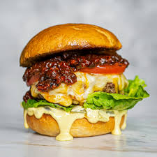
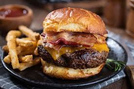
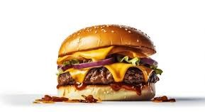

Juicy Burger





Ingredients
- 500g ground beef
- 1 medium onion (finely chopped)
- 2 cloves garlic (minced)
- 1 egg
- ½ cup breadcrumbs
- 1 tsp salt
- 1 tsp black pepper
- 1 tbsp soy sauce (optional)
- 4 burger buns
- Lettuce leaves
- Sliced tomatoes
- Sliced cheese (cheddar or American)
- Ketchup, mayo, or mustard
Steps
- In a large bowl, mix ground beef, onion, garlic, egg, breadcrumbs, salt, pepper, and soy sauce until combined.
- Shape into 4 patties of equal size.
- Heat a pan or grill and cook patties for 4–5 minutes on each side (until fully cooked and juicy).
- Toast the burger buns lightly.
- Assemble: place lettuce, tomato, burger patty, cheese slice, and sauces inside the bun.
- Serve hot with fries or salad. Enjoy!